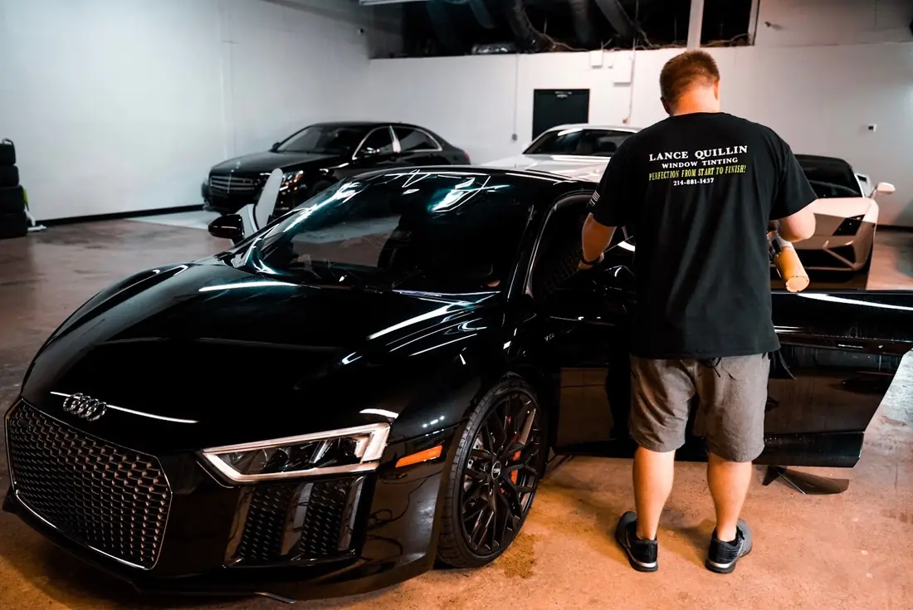

Mobile Window Tinting
Lance comes to you. Google reviewers describe tint installed at their home, from a Tesla to a Civic Type R, without ever visiting a shop.
Get a quoteHeat-rejecting window film for cars, trucks, RVs and fleets, installed by Lance Quillin wherever you park.
4.9· 46 Google reviewsWindow film for cars, trucks, RVs and commercial vehicles. Every job starts with a free quote because price depends on your vehicle and the film.
Lance comes to you. Google reviewers describe tint installed at their home, from a Tesla to a Civic Type R, without ever visiting a shop.
Get a quoteCustomers praise how much cooler the cabin feels in the Texas sun. One reviewer says Lance demonstrates each film on a heat display machine so you can feel the difference.
Get a quoteSide windows, rear glass and more. One reviewer had the entire car done, windshield included, and two new trucks were finished in a single visit.
Get a quoteRV windows are on the Instagram highlights, and a reviewer noticed right away that the heat was "not beaming in anymore."
Get a quoteThe photo gallery shows work on a fire truck, a semi and a tractor, plus frosted film on a home shower enclosure. Ask about your project.
Get a quoteRemoval is one of the Instagram highlights. Call to ask about taking old tint off before new film goes on.
Get a quoteTell us your vehicle and what matters most: heat, privacy or looks. Lance will explain the options and give you a quote.
Ask for a quote
Lance at workPhotos from the Google listing for Lance Quillin Window Tinting.
46 Google reviews
Average rating as shown on Google, November 2026.
“Absolutely 5 stars! Lance Quillin Tint is the best around. Lance is an incredible hand cutter, his precision and attention to detail are second to none. The tint lines are flawless, and the quality of his work really shows. He’s also mobile, which makes the whole process super convenient. He came to me, showed up on time, and got everything done efficiently without cutting corners. My car looks amazing, and the tint completely transformed it. Not to mention the cooling effect is amazing in Texas!!! If you’re looking for high-quality tint work done by someone who truly knows their craft, I highly recommend Lance Quillin Tint.”
“Lance was extremely professional, punctual and delivered phenomenal service. Will definitely continue doing business with him moving forward. Great job!”
“Everything was great from the very beginning. We have a hectic life and Lance was more than willing to accommodate our schedule...he even came to us. He was extremely professional, courteous and efficient. My window tint looks phenomenal and I’ve encountered zero issues. He provided great “after care” instructions that definitely saved me from messing it up! I HIGHLY recommend using Lance if you’re thinking about tinting your windows!!”
“Lance is an spectacular guy. Very communicative in explaining different types of films and very dedicated to his work. Hes done many of my vehicles and still after 6 years i still have 2 of those cars and film looks like new. Would recommend him to anyone and everyone. He is still my number one person to call on for tint.”
“I'd definitely recommend Lance to anyone. He tinted our RV windows and did an amazing job. Immediately you can tell the difference of the heat not beaming in anymore. Very reasonably priced, on time, professional, and wore a mask. You can't ask for anyone better. Thank you Lance for a job perfectly done!”
“Lance is awesome! He did tint on my new Type R Civic and did a great job!!! He is very particular about the work he does, makes it perfect and truly cares about his customers!! I love that he will come to you which makes it even better. Definitely recommend him to everyone and will be using him for all of my future vehicles!! Thanks Lance!!”
“Lance was on time, very professional and very knowledgeable. He completed the work in a short time, looks great. He also had the best prices after calling other window tint places. Lance also guarantees his work, another plus for me.”
“Not only is Lance an awesome guy he does an incredible job. It's honestly a form of art that he has perfected over time. You're not just paying for hours of work but for over 20 years of experience that's definitely going to last. So, weather you want tint for shade from the heat , cosmetic looks or privacy..he definitely has your back.”
“Got my Tesla tinted. Lance came to my house and did an excellent job! Very prompt and responded quickly to my text message. I have use Lance for multiple cars and he never disappoint.”
“We just had our two new trucks tinted by Lance. We won’t go anywhere else to have this done as he’s the best in the bizz!! Lance was able to squeeze us into his busy schedule; a Ram 1500 and a Ford Ranger, and as usual the work performed on our trucks was amazing. I say amazing because we are that family that is very particular about who works on our vehicles which is why we go to Lance.... he’s simply the Best in the window tint industry hands down!! Thanks Lance!!”
Selection of verbatim Google reviews, rating as shown on Google, November 2026. Drag or swipe to browse.
Lance Quillin is listed in Sachse, TX and travels to customers around the Dallas area, including McKinney according to one review. There is no public shop address, so call or text to confirm he can reach you.
The Facebook page lists Sachse, TX, and Google reviewers describe Lance as a mobile tinter in the Dallas area. There is no public shop address, so call or text to confirm your location.
Yes. The business card in the Google photos reads "Mobile Service," and many reviewers say Lance tinted their vehicle at their home or work.
Google lists Monday to Friday 9 AM to 7 PM, Saturday 9 to 11 AM, and closed on Sunday. Hours can change, so call or text to confirm.
No price list is published. Cost depends on the vehicle and the film, so send a free quote request or call. Several reviewers describe the prices as reasonable or better than other shops they called.
A Google reviewer says Lance guarantees his work. Ask him about the details of the warranty on the film you choose.
Call or text +1 214-881-1437, email Lmquillin@gmail.com, or use the quote form on this site. The form prepares a text message to Lance. Nothing is booked until he confirms the day and place with you.
Call or text for a free quote. Mobile service around Dallas. Mon–Fri 9 AM – 7 PM, Sat 9 – 11 AM.